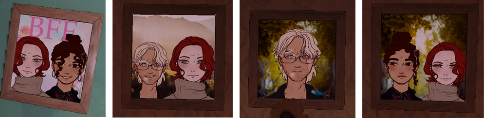
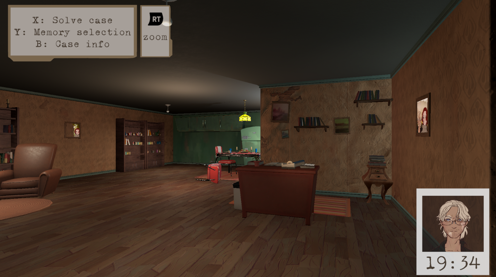

Theme
Singleplayer • 3D • First-Person • Puzzle • Detective
Responsibilities
- Designed the core mechanic and game loop
- Brainstormed and prototyped multiple versions and iterations of the game
- Designed and created a level in unity
Context
REMEMBER! is a small solo game design project I created as my final exam assignment for my Game Design 3 class.
This assignment was essentialy the second part of a series of previous assignments,
where students were required to brainstorm multiple game ideas and turn at least one into a prototype.
In this final assignment, we had to take one of those prototype and make it into a vertical slice.
Game
In this game, you're a psychic detective with the unique ability
to explore the memories of suspects involved in a murder case.
Gain a new perspective like no one has before and experience the murder through the suspects eyes.
You're job is to dive into these memories and uncover what really happened.
You're the only one that can solve this case, we need you!
The core mechanic revolves around memory exploration, switching between the different memories and exploring them. The player must figure out who the murderer is, what the murderweapon and motive was. All the memories take place in the same location, but during different times and from the perspectives of different suspects.
Core design Choices
-
Clues
Clues are a crucial part of the game's design, and getting them right was a challenge. They can't be too difficult, the player must be able to solve the case. They can't be too easy either, otherwise solving the case wouldn't feel as rewarding.
There are a lot of different types of clues that can be found in the game.-
Written clues
Clues that the player can read
Some examples:-
Time
Each memory shows when it took place.
This helps the player construct their own timeline, when what happened. -
Case information
The player receives a page of case information at the beginning of each case. It provides background information, like the relationship between the suspects and some additional information of the victim.
-
-
Environmental clues
Clues that can be found in the environment.
Some examples:-
Portraits
These portraits hint at the relationships between the characters.
 -
Living room mess
In the memory of maria before the murder happened, the living room can be seen as nice and neat. In the memory of maria after the murder happened, the room becomes very bloody and messy indicating a struggle around the time of that memory.
-
-
Audio clues
Clues the player can hear.
An example:-
Loud music
With the living room as a mess and there's suddenly loud music playing when there wasn't any before, it indicates that the murderer was trying to silence the murder act by playing loud metal music
-
-
Situational clues
The setting the player finds themselves in and its situational context.
An example:-
Spawn positions
In the case info, Robert's statement reads that he was never in the bathroom, but his memory starts in the bathroom, indicating him lying.
This clue is one of the clues that are a bit more vague and slightly misleads the player. It suggests that robert isn't being honest and might be hiding something but it doesn't necessarily mean he's the murderer.
-
-
-
Two suspects, each two memories
In each case(currently only one), there are two suspects, each with two memories. Having two suspects is necessary for it be a murder case, but it currently can't exceed that to prevent the player from being overwhelmed by having to explore more than four memories at once.

-
Narrative Design of Case One
This case is designed to be simple and straightforward, serving as an introduction to the core mechanics of the game.
It's a simple story about an affair that ended in murder, allowing players to focus on learning how the mechanics works without being overwhelmed.
By the time players reach later cases with more complexer narratives and puzzles, they'll already be familiar with the gameplay systems and can fully focus on solving the case rather than learning how to play.
-
Level design
The level is intentionally quite small, considering the player will need to re-explore at least four different versions of the same place.
If it's too big, it may become overwhelming or tedious.The environment was based on this premade free Unity asset pack.
I modified it and enhanced it by adding some of my own assets.
This helped me design the game level within a limited time frame, and shows that I can work with existing assets.